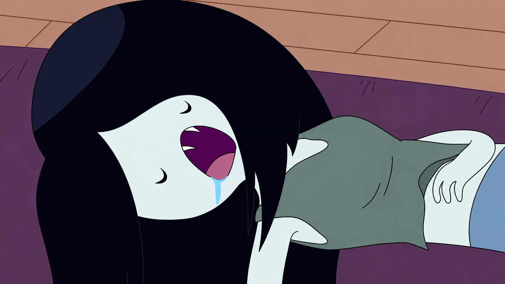

Sobre Marceline
Marceline Abadeer es la reina vampiro milenaria de la Tierra de Ooo, conocida por su actitud rebelde, su amor por la música y su bajo eléctrico hecho con el hacha familiar. Mitad demonio por su padre, Hunson Abadeer, y vampiro tras haber cazado a los vampiros de Ooo, absorbe el color rojo en lugar de beber sangre y se mueve flotando o volando por los cielos. Detrás de su apariencia despreocupada y sarcástica guarda una historia larga y compleja, marcada por su vínculo protector con Simón Petrikov (el Rey Helado) durante su infancia, su amistad y relación con Dulce Princesa, y la búsqueda constante de su propio lugar en el mundo.